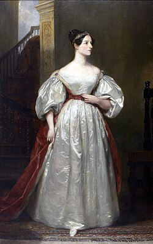

Детство

Портрет Ады Лавлейс кисти художницы Маргарет Сары Карпентер, 1836 год
До рождения дочери Ады лорд Байрон ожидал, что его ребёнок будет «славным мальчиком», и был очень разочарован, когда 10 декабря 1815 года его супруга Анна Изабелла (Аннабелла) родила девочку. Ребёнка назвали в честь сводной сестры Байрона, Августы Ли, а сам поэт называл её Адой. 16 января следующего года по приказу лорда Анна Изабелла отправилась в дом своих родителей в Киркби Мэллори[англ.], взяв с собой пятинедельную дочь. Хотя на тот момент британские законы в случае развода давали отцу полную опеку над детьми, Байрон даже не пытался потребовать ребёнка себе, но попросил свою сестру держать его в курсе дел его дочери.
Научная Деятельность
Мать пригласила для Ады своего бывшего учителя — шотландского математика Огастеса де Моргана и знаменитую Мэри Сомервилль, которая перевела в своё время с французского «Трактат о небесной механике» математика и астронома Пьера-Симона Лапласа. Именно Мэри стала для своей воспитанницы примером для подражания. С двенадцати лет она увлекалась механикой, а в её голове созревала идея о конструкции летательного аппарата, который приводился бы в движение паром. В феврале 1828 года она начала воплощать задумку в жизнь с построения крыльев. Для этого она изучала разные материалы и долго подбирала размер. Среди предполагаемых материалов для крыльев были бумага, промасленный шёлк, проволока и перья. Для соблюдения пропорции она изучала анатомию птиц. Затем Ада решила написать книгу, чтобы не забыть свои наработки. А затем искала инструменты для пересечения страны на этих крыльях. Последним же шагом стало совмещение пара и «искусства полёта». Когда Аде исполнилось семнадцать лет, она смогла выезжать в свет и была представлена королю и королеве. Имя Чарльза Бэббиджа юная мисс Байрон впервые услышала за обеденным столом от Мэри Сомервилль. Спустя несколько недель, 5 июня 1833 года, они впервые увиделись. Чарльз Бэббидж в момент их знакомства был профессором на кафедре математики Кембриджского университета — как сэр Исаак Ньютон за полтора века до него. Позднее она познакомилась и с другими выдающимися личностями той эпохи: Майклом Фарадеем, Дэвидом Брюстером, Чарльзом Уитстоном, Чарльзом Диккенсом и другими. За несколько лет до вступления в должность Бэббидж закончил описание счётной машины, которая смогла бы производить вычисления с точностью до двадцатого знака. Чертёж с многочисленными валиками и шестерёнками, которые приводились в движение рычагом, лёг на стол премьер-министра. В 1823 году была выплачена первая субсидия на постройку того, что теперь считается первым на Земле компьютером и известно под названием «Большая разностная машина Бэббиджа». Строительство продолжалось десять лет, конструкция машины всё более усложнялась, и в 1833 году финансирование было прекращено.
Смерть
Лавлейс умерла в возрасте 36 лет 27 ноября 1852 года от рака матки. Болезнь продлилась несколько месяцев, в это время её мать Аннабелла распоряжалась тем, с кем Ада виделась, и исключила всех друзей и доверенных лиц. Под влиянием матери Ада пережила религиозное обращение, и её уговорили раскаяться в прежнем поведении и сделать Аннабеллу своей душеприказчицей. Она утратила связь с мужем после того, как 30 августа призналась ему в чём-то, после чего он оставил её. Неизвестно, что она ему сказала. По её просьбе она была похоронена рядом с отцом, которого она никогда не знала при жизни, в церкви Святой Марии Магдалины в Хакнелле, Ноттингемшир. Мемориальная доска, написанная на латыни, посвящённая ей и её отцу, находится в часовне, пристроенной к Хорсли Тауэрс.